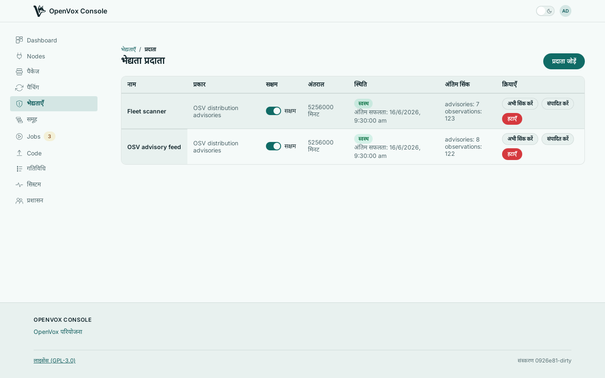

उपयोग
कमज़ोरियों पर नज़र रखें
कमज़ोरी प्रदाता सेट अप कीजिए, फ़्लीट के निष्कर्ष पढ़िए, और जानिए कि हर प्रदाता क्या देख सकता है और क्या नहीं।
कंसोल बताता है कि कौन-से Nodes किन ज्ञात कमज़ोरियों से प्रभावित हैं, एक या अधिक प्रदाताओं के डेटा को मिलाकर। यह हर प्रदाता के डेटा का मिलान हर Node द्वारा बताए गए पैकेजों से करता है, इसलिए Nodes पर पैकेज रिपोर्टिंग चालू होनी चाहिए: देखें Nodes जोड़ें।
निष्कर्ष देखने के लिए vulnerabilities:read चाहिए; प्रदाता कॉन्फ़िगर करने के लिए vulnerabilities:manage। nodes:read में इनमें से कोई भी शामिल नहीं है: निष्कर्ष किसी सूची से अधिक संवेदनशील होते हैं।
प्रदाता चुनें
| प्रदाता | डेटा स्रोत | क्रेडेंशियल |
|---|---|---|
| OSV | सार्वजनिक OSV डेटाबेस, या उसका आपका अपना mirror | कोई नहीं |
| Tenable | आपका Tenable tenant | API कुंजियाँ |
कितने भी प्रदाता एक साथ चल सकते हैं, जिनमें अलग-अलग डेटा स्थानों वाले दो OSV प्रदाता भी शामिल हैं। कई प्रदाताओं द्वारा बताई गई कमज़ोरी एक ही बार दिखती है, हर प्रदाता की अपनी गंभीरता और सुधरे हुए संस्करण के साथ।
जब तक आप कोई प्रदाता सक्षम नहीं करते, कंसोल से कुछ भी बाहर नहीं जाता।
क्रेडेंशियल के लिए तैयारी करें
क्रेडेंशियल वाले प्रदाता को डेटाबेस में उन्हें सील करने के लिए एक कुंजी चाहिए। एक कुंजी बनाइए, और उसे CONSOLE_SECRETS_KEY_FILE में दर्ज कीजिए:
openssl rand -base64 32 > secrets.key
chmod 600 secrets.key
इसके बिना OSV काम करता है, और क्रेडेंशियल की ज़रूरत वाला प्रदाता सेटिंग का नाम बताने वाली त्रुटि के साथ अस्वीकार कर दिया जाता है।
इस कुंजी का बैकअप अपने डेटाबेस बैकअप के साथ लीजिए, पर उसे उनसे अलग रखिए। इसके खो जाने से कोई निष्कर्ष नहीं खोता, लेकिन हर संग्रहीत क्रेडेंशियल अपठनीय हो जाता है, और वे प्रदाता तब तक विफल रहते हैं जब तक उनके क्रेडेंशियल नई कुंजी के तहत फिर से दर्ज न किए जाएँ।
प्रदाता जोड़ें
- भेद्यताएँ खोलिए, फिर प्रदाता।
- मनचाहे प्रकार का प्रदाता जोड़िए, और उसकी सेटिंग्स और कोई क्रेडेंशियल भरिए। कंसोल संग्रहीत क्रेडेंशियल को फिर कभी नहीं दिखाता; संपादन करते समय संग्रहीत क्रेडेंशियल बनाए रखने के लिए क्रेडेंशियल फ़ील्ड खाली छोड़ दीजिए।
- इसे सक्षम कीजिए।


यह तुरंत sync होता है और फिर एक समय-सारणी पर, OSV के लिए डिफ़ॉल्ट रूप से हर घंटे। निष्कर्ष तब ताज़ा होते हैं जब प्रदाता sync होता है, हर Puppet रन पर नहीं।
OSV क्या डाउनलोड करता है
OSV केवल उन्हीं डिस्ट्रीब्यूशनों का डेटा डाउनलोड करता है जो आपका फ़्लीट चलाता है, डिफ़ॉल्ट रूप से HTTPS पर storage.googleapis.com से। किसी डिस्ट्रीब्यूशन का पहला sync उसका पूरा archive डाउनलोड करता है - Debian के लिए लगभग 70 MB और Ubuntu के लिए 700 MB - और बाद के sync केवल बदलाव।
Air-gapped साइटें
OSV प्रदाता के डेटा स्थान को OSV bucket के किसी आंतरिक mirror पर लगाइए, जिसकी संरचना हर डिस्ट्रीब्यूशन के लिए वैसी ही हो: उसकी all.zip, उसकी modified_id.csv, और हर बदले हुए रिकॉर्ड के लिए एक JSON फ़ाइल। एक साधारण static वेब सर्वर पर्याप्त है, और उसे भरने के लिए हर डिस्ट्रीब्यूशन की डायरेक्टरी कॉपी कर देना पर्याप्त है:
gsutil -m rsync -r gs://osv-vulnerabilities/Debian ./Debian
डायरेक्टरी नामों में spaces होते हैं, जैसे Rocky Linux और Red Hat।
Tenable
Tenable प्रदाता पहले हर खुला निष्कर्ष आयात करता है, फिर केवल बदलाव। हर Tenable asset का मिलान उसके नामों के आधार पर हर Node के certname और बताए गए FQDN से किया जाता है। जो asset किसी Node से मेल नहीं खाता, या कई से खाता है, उसे छोड़ दिया जाता है और बेमेल गिना जाता है; बढ़ती गिनती का आमतौर पर अर्थ है कि Tenable को आपके certnames से अलग नाम दिखते हैं।
निष्कर्ष पढ़ें
भेद्यताएँ पृष्ठ पूरे फ़्लीट के निष्कर्ष, सबसे गंभीर से शुरू करके, सूचीबद्ध करता है, साथ में यह भी कि हर एक कितने Nodes को प्रभावित करता है। डिफ़ॉल्ट रूप से यह वे निष्कर्ष दिखाता है जिनका सुधार उपलब्ध है, यानी जिन्हें patching बदल सकती है; जिनका कोई सुधार जारी नहीं हुआ उन्हें भी शामिल करने के लिए समाधान को सभी पर सेट कीजिए।
जिस Node का कोई भी सक्षम प्रदाता मूल्यांकन नहीं कर सका, वह हर प्रदाता के कारण के साथ मूल्यांकित नहीं के रूप में दिखाया जाता है, कभी साफ़ के रूप में नहीं:
| कारण | अर्थ |
|---|---|
| असमर्थित OS | OSV, Debian, Ubuntu, AlmaLinux, Rocky Linux और RHEL 7 से 10 तक को कवर करता है |
| कोई पैकेज डेटा नहीं | Node कोई पैकेज नहीं बताता; उसके लिए रिपोर्टिंग चालू कीजिए |
| agent अपग्रेड आवश्यक | Node का पैकेज डेटा भरोसेमंद मिलान के लिए बहुत पुराना है; उसका node agent अपग्रेड करने से यह उसके अगले Puppet रन पर ठीक हो जाता है |
| Tenable को नहीं दिखा | कोई Tenable asset इस Node से मेल नहीं खाया |
| अभी sync नहीं हुआ | प्रदाता ने अभी कोई sync पूरा नहीं किया है |
OSV से क्या अपेक्षा करें
- Debian और Ubuntu पर, ऐसी कई कमज़ोरियाँ जिन्हें डिस्ट्रीब्यूशन नगण्य मानता है, या जिन्हें ठीक न करने का निर्णय ले चुका है, फिर भी दिखती हैं — ऐसे निष्कर्षों के रूप में जिनका कोई सुधार जारी नहीं हुआ। इसीलिए सूची "fix available" से शुरू होती है।
- RHEL Nodes का मिलान केवल मुख्य रिपॉज़िटरी से होता है। extended-support या add-on रिपॉज़िटरी का उपयोग करने वाले Nodes ऐसे निष्कर्ष दिखा सकते हैं जो उन पर लागू नहीं होते।
- AlmaLinux कोई गंभीरता प्रकाशित नहीं करता, इसलिए उसके निष्कर्ष अज्ञात दिखाते हैं।
पुराने कर्नेलों और बहुत पहले हटाए गए अन्य पैकेजों के विरुद्ध निष्कर्ष आमतौर पर उन पैकेजों से आते हैं जिन्हें purge किए बिना हटाया गया था, और जिनकी कॉन्फ़िगरेशन फ़ाइलें बची रह गई हैं। Node पर apt purge '~c' से उन्हें purge कीजिए; प्रदाता के अगले sync पर निष्कर्ष बंद हो जाते हैं।